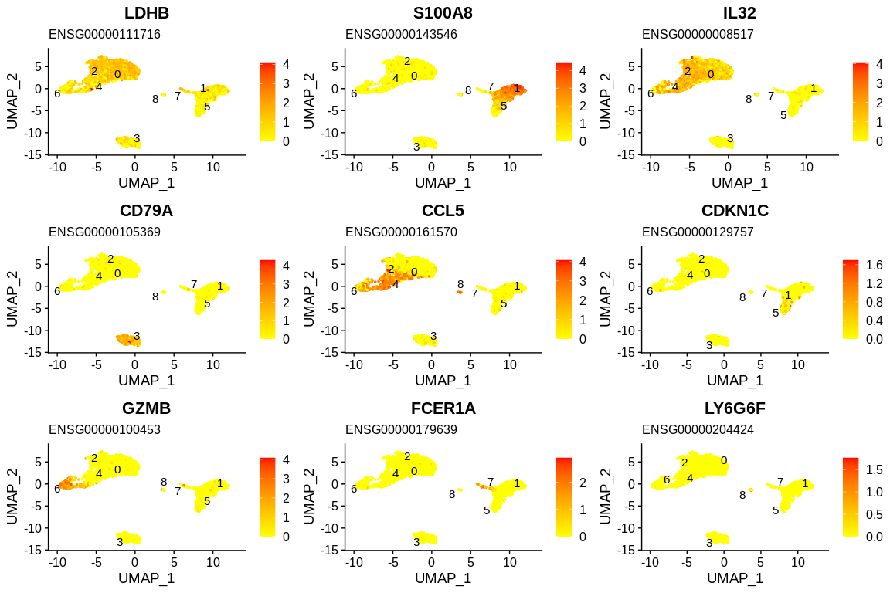
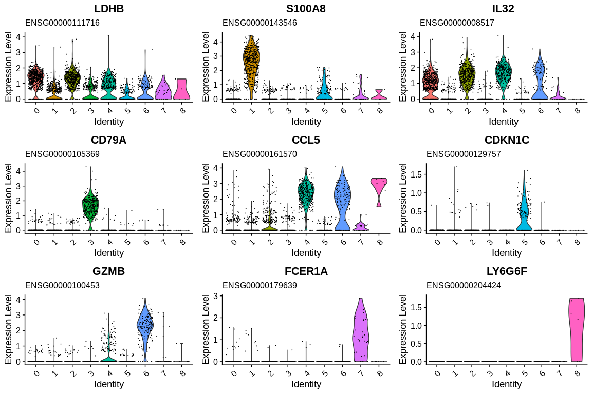

Markers Annotation¶
Each cluster is associated with a list of marker genes that we now need to annotate in order to biologically identify the cell clusters. We will start by annotating the gene identifiers with Biomart and then use functional enrichment methods to find the functions shared by the marker genes.
Via Biomart¶
We will use the dataframe we generated at the beginning of the analysis to allow us to add the gene name and a description for each gene ID set.
## Merge markers results with biomart annotation
pbmc_markers_annotated <- merge(x = pbmc_markers, #First df to merge
y = annotated_hg19, #Second df to merge
by.x = "gene", #Column name of first df used for matching lines
by.y = "ensembl_gene_id", #Column name of second df used for matching lines
all.x = TRUE) #Keep all lines from first df even if there is no match with second df
We will now remove all markers where the adjusted p-value is greater than a 5% threshold and with the absolute value of the mean log(Fold Change) less than 0.25 in order to obtain the list of markers with a significant expression differential.
pbmc_markers_signif <- subset(pbmc_markers_annotated,
p_val_adj < 0.05 &
abs(avg_log2FC) >= 0.25) #Filter dataframe based on p_val_adj column
## Number of significative DEG per cluster
table(pbmc_markers_signif$cluster)
1 2 3 | |
## Sorting results by cluster and by average log2(Fold Change)
pbmc_markers_signif <- pbmc_markers_signif %>% #Rearrange df with dplyr package
group_by(cluster) %>% #Group df based on cluster column
arrange(desc(pct.1), .by_group = TRUE) #Sort lines by descending the column avg_log2FC and by group
## Filter to retrieve meaningful genes
markers_display <- pbmc_markers_signif %>%
filter((pct.1 - pct.2) >= (0.25 * pct.1) & pct.1 >= 0.5) %>%
slice_max(n = 3, order_by = avg_log2FC, with_ties = FALSE)
## Most DE gene marker for each cluster
paged_table(markers_display)
First annotated markers for each cluster
| gene | p_val | avg_log2FC | pct.1 | pct.2 | p_val_adj | cluster | external_gene_name | description | gene_biotype | chromosome_name |
|---|---|---|---|---|---|---|---|---|---|---|
| ENSG00000142546 | 0 | 1.261953 | 0.663 | 0.354 | 0 | 0 | NOSIP | nitric oxide synthase interacting protein [Source:HGNC Symbol;Acc:17946] | protein_coding | 19 |
| ENSG00000111716 | 0 | 1.179308 | 0.929 | 0.592 | 0 | 0 | LDHB | lactate dehydrogenase B [Source:HGNC Symbol;Acc:6541] | protein_coding | 12 |
| ENSG00000167286 | 0 | 1.061714 | 0.853 | 0.415 | 0 | 0 | CD3D | CD3d molecule, delta (CD3-TCR complex) [Source:HGNC Symbol;Acc:1673] | protein_coding | 11 |
| ENSG00000143546 | 0 | 6.683076 | 0.971 | 0.119 | 0 | 1 | S100A8 | S100 calcium binding protein A8 [Source:HGNC Symbol;Acc:10498] | protein_coding | 1 |
| ENSG00000163220 | 0 | 6.215798 | 0.998 | 0.212 | 0 | 1 | S100A9 | S100 calcium binding protein A9 [Source:HGNC Symbol;Acc:10499] | protein_coding | 1 |
| ENSG00000170458 | 0 | 5.984897 | 0.666 | 0.027 | 0 | 1 | CD14 | CD14 molecule [Source:HGNC Symbol;Acc:1628] | protein_coding | 5 |
| ENSG00000116824 | 0 | 1.563939 | 0.635 | 0.254 | 0 | 2 | CD2 | CD2 molecule [Source:HGNC Symbol;Acc:1639] | protein_coding | 1 |
| ENSG00000168685 | 0 | 1.408361 | 0.733 | 0.336 | 0 | 2 | IL7R | interleukin 7 receptor [Source:HGNC Symbol;Acc:6024] | protein_coding | 5 |
| ENSG00000008517 | 0 | 1.384736 | 0.949 | 0.473 | 0 | 2 | IL32 | interleukin 32 [Source:HGNC Symbol;Acc:16830] | protein_coding | 16 |
| ENSG00000247982 | 0 | 7.168087 | 0.561 | 0.010 | 0 | 3 | LINC00926 | long intergenic non-protein coding RNA 926 [Source:HGNC Symbol;Acc:27514] | lincRNA | 15 |
| ENSG00000105369 | 0 | 6.865916 | 0.939 | 0.041 | 0 | 3 | CD79A | CD79a molecule, immunoglobulin-associated alpha [Source:HGNC Symbol;Acc:1698] | protein_coding | 19 |
| ENSG00000100721 | 0 | 6.590071 | 0.625 | 0.022 | 0 | 3 | TCL1A | T-cell leukemia/lymphoma 1A [Source:HGNC Symbol;Acc:11648] | protein_coding | 14 |
| ENSG00000113088 | 0 | 4.668454 | 0.582 | 0.050 | 0 | 4 | GZMK | granzyme K (granzyme 3; tryptase II) [Source:HGNC Symbol;Acc:4711] | protein_coding | 5 |
| ENSG00000161570 | 0 | 3.478015 | 0.968 | 0.223 | 0 | 4 | CCL5 | chemokine (C-C motif) ligand 5 [Source:HGNC Symbol;Acc:10632] | protein_coding | 17 |
| ENSG00000145220 | 0 | 2.608064 | 0.576 | 0.127 | 0 | 4 | LYAR | Ly1 antibody reactive [Source:HGNC Symbol;Acc:26021] | protein_coding | 4 |
| ENSG00000129757 | 0 | 5.643867 | 0.519 | 0.009 | 0 | 5 | CDKN1C | cyclin-dependent kinase inhibitor 1C (p57, Kip2) [Source:HGNC Symbol;Acc:1786] | protein_coding | 11 |
| ENSG00000188290 | 0 | 5.060087 | 0.589 | 0.020 | 0 | 5 | HES4 | hes family bHLH transcription factor 4 [Source:HGNC Symbol;Acc:24149] | protein_coding | 1 |
| ENSG00000166927 | 0 | 4.377772 | 0.810 | 0.074 | 0 | 5 | MS4A7 | membrane-spanning 4-domains, subfamily A, member 7 [Source:HGNC Symbol;Acc:13378] | protein_coding | 11 |
| ENSG00000115523 | 0 | 6.159853 | 0.968 | 0.131 | 0 | 6 | GNLY | granulysin [Source:HGNC Symbol;Acc:4414] | protein_coding | 2 |
| ENSG00000100453 | 0 | 5.924214 | 0.955 | 0.068 | 0 | 6 | GZMB | granzyme B (granzyme 2, cytotoxic T-lymphocyte-associated serine esterase 1) [Source:HGNC Symbol;Acc:4709] | protein_coding | 14 |
| ENSG00000143185 | 0 | 5.605621 | 0.551 | 0.021 | 0 | 6 | XCL2 | chemokine (C motif) ligand 2 [Source:HGNC Symbol;Acc:10646] | protein_coding | 1 |
| ENSG00000132386 | 0 | 7.901006 | 0.500 | 0.002 | 0 | 7 | SERPINF1 | serpin peptidase inhibitor, clade F (alpha-2 antiplasmin, pigment epithelium derived factor), member 1 [Source:HGNC Symbol;Acc:8824] | protein_coding | 17 |
| ENSG00000179639 | 0 | 7.630987 | 0.812 | 0.011 | 0 | 7 | FCER1A | Fc fragment of IgE, high affinity I, receptor for; alpha polypeptide [Source:HGNC Symbol;Acc:3609] | protein_coding | 1 |
| ENSG00000132514 | 0 | 6.084949 | 0.688 | 0.015 | 0 | 7 | CLEC10A | C-type lectin domain family 10, member A [Source:HGNC Symbol;Acc:16916] | protein_coding | 17 |
| ENSG00000204424 | 0 | 12.573630 | 0.714 | 0.000 | 0 | 8 | LY6G6F | lymphocyte antigen 6 complex, locus G6F [Source:HGNC Symbol;Acc:13933] | protein_coding | 6 |
| ENSG00000005961 | 0 | 11.632991 | 0.857 | 0.002 | 0 | 8 | ITGA2B | integrin, alpha 2b (platelet glycoprotein IIb of IIb/IIIa complex, antigen CD41) [Source:HGNC Symbol;Acc:6138] | protein_coding | 17 |
| ENSG00000127920 | 0 | 11.064293 | 1.000 | 0.010 | 0 | 8 | GNG11 | guanine nucleotide binding protein (G protein), gamma 11 [Source:HGNC Symbol;Acc:4403] | protein_coding | 7 |
## Generate feature plots and stock them into variable
plots <- FeaturePlot(pbmc_small, #SeuratObject
features = top_n(x= pbmc_markers_signif, n = 1, wt = avg_log2FC)$gene, #Vector of genes to plot
cols = c("yellow", "red"), #Change color
label = TRUE, #Plot ident position
combine = FALSE, #Return list of plot objets instead of a combined plot (easier to process)
repel = TRUE) #Avoid label overlap
## Add gene name as title
plots <- lapply(plots, #List of plots
add_title_gene_name, #Function to apply to the list
gene_format = annotated_hg19) #Fill in the dataframe parameter
## Plot list of plots
grid.arrange(grobs = plots)

## Generate violin plots and stock them into variable
vln_plots <- VlnPlot(pbmc_small, #SeuratObject
features = top_n(x= pbmc_markers_signif, n = 1, wt = avg_log2FC)$gene, #Vector of genes to plot
combine = FALSE) #Return list of plot objets instead of a combined plot (easier to process)
## Add gene name as title
vln_plots <- lapply(vln_plots, #List of plots
add_title_gene_name, #Function to apply to the list
gene_format = annotated_hg19) #Fill in the dataframe parameter
## Remove unecessary legend
vln_plots <- lapply(vln_plots, function(plot){
plot <- plot + theme(legend.position = "none")
return(plot)
})
## Plot list of plots
grid.arrange(grobs = vln_plots)

We now have each Ensembl gene ID set associated with a gene name and a description to help us identify the gene lists. This is easy if you know the theory of the biology of your system but if you don't know enough about the genes identified as markers, the enrichment methods will help you.
Via ClusterProfiler¶
To understand the relationship between genes specific to our clusters we can use functional enrichment methods. There are two types of functional enrichment methods:
- Over-Representation Analysis methods which are based on a ratio between the number of marker genes present in a functional gene set and the total number of genes present in this gene set.
- Gene Set Enrichment Analysis (GSEA) methods which calculate an enrichment rate from a ranking of genes.
An R package will allow us to perform these different analyses using several databases. It is quite complete and I advise you to take the time to look at the documentation because here we will only see a small overview.